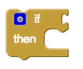
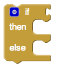
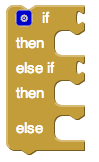

AI2 Control
Control Blocks
- if & if else
- for each from to
- for each in list
- while
- if then else
- do
- evaluate but ignore result
- open another screen
- open another screen with start value
- get start value
- close screen
- close screen with value
- close application
- get plain start text
- close screen with plain text
if & if else

Tests a given condition. If the condition is true, performs the actions in a given sequence of blocks; otherwise, the blocks are ignored.

Tests a given condition. If the result is true, performs the actions in the -then sequence of blocks; otherwise, performs the actions in the -else sequence of blocks.

Tests a given condition. If the result is true, performs the actions in the -then sequence of blocks; otherwise tests the statement in the -else if section. If the result is true, performs the actions in the -then sequence of blocks; otherwise, performs the actions in the -else sequence of blocks.
The gif below shows how to use the if else mutator block.
for each from to

Runs the blocks in the do section for each numeric value in the range starting at from and ending at to, incrementing number by the value of by each time. Use the given variable name, number to refer to the current value. You can change the name number to something else if you wish.
for each in list

Runs the blocks in the do section for each item in the list. Use the given variable name, item, to refer to the current list item. You can change the name item to something else if you wish.
while

Tests the -test condition. If true, performs the action given in -do , then tests again. When test is false, the block ends and the action given in -do is no longer performed.
if then else

Tests a given condition. If the statement is true, performs the actions in the then-return sequence of blocks and returns the then-return value; otherwise, performs the actions in the else-return sequence of blocks and returns the else-return value.
do

Sometimes in a procedure or another block of code, you may need to do something and return something, but for various reasons you may choose to use this block instead of creating a new procedure.
evaluate but ignore result

Provides a "dummy socket" for fitting a block that has a plug on its left into a place where there is no socket, such as one of the sequence of blocks in the do part of a procedure or an if block. The block you fit in will be run, but its returned result will be ignored. This can be useful if you define a procedure that returns a result, but want to call it in a context that does not accept a result.
open another screen

Opens the screen with the provided name.
The screenName must be one of the Screens created using the Designer. The screenName should be entered into a Text component and typed exactly as named in the Designer. (Case is important, if the designed screen name is myNewScreen, what you use in the puzzle piece cannot be mynewscreen or MyNewScreen for example.)
If you do open another screen, you should close it when returning to your main screen to free system memory. Failure to close a screen upon leaving it will eventually lead to memory problems.
App developers should never close Screen1 or use this block to return to Screen1. Use the Close Screen block instead.
open another screen with start value

Opens another screen and passes a value to it.
get start value

Returns the start value given to the current screen.
This value is given from using open another screen with start value or close screen with value.
close screen

Closes the current screen.
close screen with value

Closes the current screen and returns a value to the screen that opened this one
close application

Closes the application.
get plain start text

Returns the plain text that was passed to this screen when it was started by another app. If no value was passed, it returns the empty text. For multiple screen apps, use get start value rather than get plain start text
close screen with plain text

Closes the current screen and passes text to the app that opened this one. This command is for returning text to non-App Inventor activities, not to App Inventor screens. For App Inventor Screens, as in multiple screen apps, use Close Screen with Value, not Close Screen with Plain Text.